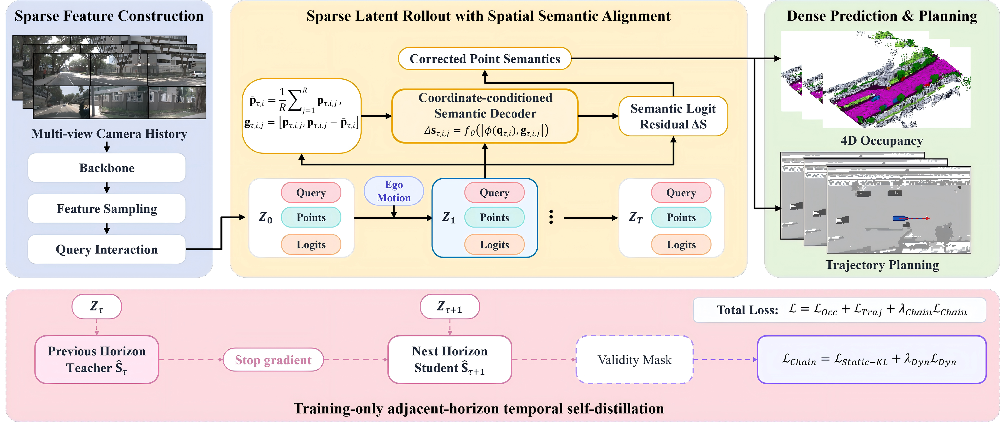
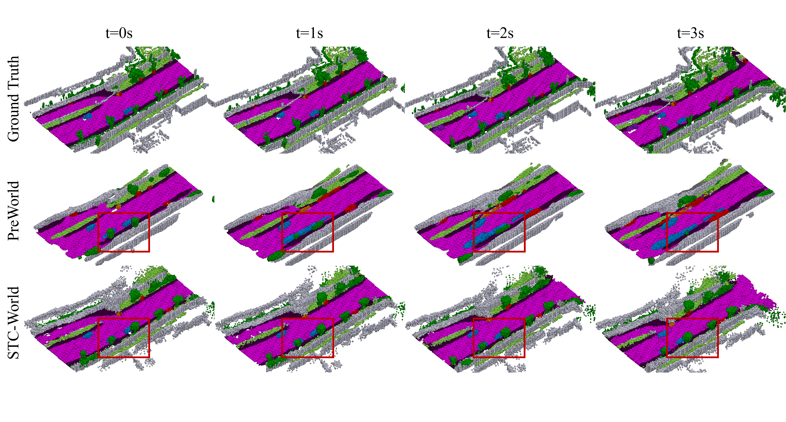
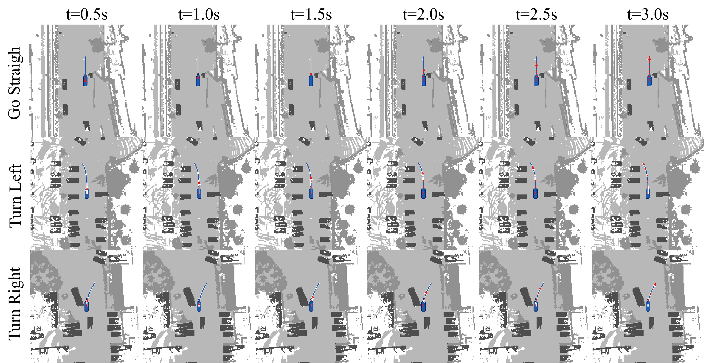

SPATIOTEMPORAL CONSISTENCY · SPARSE WORLD MODEL
Spatiotemporally Consistent Sparse World Model for 4D Occupancy Prediction and Planning in Autonomous Driving
Abstract
4D semantic occupancy forecasting provides a scene-level representation for anticipating future geometry and semantics in autonomous driving. Sparse occupancy world models improve efficiency by rolling out compact latent queries, but this abstraction can decouple semantic predictions from refined point locations and allow semantics to drift across forecast horizons. To address this limitation, we present STC-World, a spatiotemporally consistent sparse world model for 4D occupancy prediction and planning. Its coordinate-conditioned semantic decoder combines query features with normalized refined coordinates and query-relative offsets to correct point-level semantic logits. Its adjacent-horizon temporal self-distillation then propagates corrected semantics along valid query lineages using class-aware objectives for static and dynamic categories. The two mechanisms align semantic predictions with both their spatial support and temporal evolution while preserving sparse inference. On Occ3D-nuScenes, STC-World achieves a state-of-the-art average mIoU of 13.47% over the 1–3 s forecasting horizons. It further obtains 0.20 m average L2 error and 0.09% average collision rate in downstream planning, while running at 2.56 FPS with 391.2 ms mean latency.
01
Method Overview
A sparse world state keeps query features, refined points, and semantic logits aligned across space and forecast horizons.

02
Results
Main quantitative comparisons on Occ3D-nuScenes. Lower is better for L2 and collision rate; higher is better for mIoU and IoU.
| Method | Aux. Sup. | mIoU ↑ | IoU ↑ | ||||||
|---|---|---|---|---|---|---|---|---|---|
| 1s | 2s | 3s | Avg. | 1s | 2s | 3s | Avg. | ||
| OccWorld-S | None | 0.28 | 0.26 | 0.24 | 0.26 | 5.05 | 5.01 | 4.95 | 5.00 |
| RenderWorld | None | 2.83 | 2.55 | 2.37 | 2.58 | 14.61 | 13.61 | 12.98 | 13.73 |
| OccWorld-T | Semantic LiDAR | 4.68 | 3.36 | 2.63 | 3.56 | 9.32 | 8.23 | 7.47 | 8.34 |
| OccWorld-D | 3D Occ | 11.55 | 8.10 | 6.22 | 8.62 | 18.90 | 16.26 | 14.43 | 16.53 |
| OccLLaMA-F | 3D Occ | 10.34 | 8.66 | 6.98 | 8.66 | 25.81 | 23.19 | 19.97 | 22.99 |
| PreWorld | 3D Occ | 11.69 | 8.72 | 6.77 | 9.06 | 23.01 | 20.79 | 18.84 | 20.88 |
| PreWorld | 2D & 3D Occ | 12.27 | 9.24 | 7.15 | 9.55 | 23.62 | 21.76 | 19.63 | 21.62 |
| DFIT-OccWorld | 3D Occ | 13.38 | 10.16 | 7.96 | 10.50 | 19.18 | 16.85 | 15.02 | 17.02 |
| SparseWorld | 3D Occ | 14.93 | 13.15 | 11.51 | 13.20 | 22.96 | 22.10 | 21.05 | 22.03 |
| STC-World (Ours) | 3D Occ | 15.20 | 13.44 | 11.77 | 13.47 | 23.11 | 22.23 | 21.15 | 22.16 |
| Method | Aux. Sup. | L2 (m) ↓ | Collision Rate (%) ↓ | ||||||
|---|---|---|---|---|---|---|---|---|---|
| 1s | 2s | 3s | Avg. | 1s | 2s | 3s | Avg. | ||
| UniAD | Map, Box, Motion, Track, 3D Occ | 0.48 | 0.96 | 1.65 | 1.03 | 0.05 | 0.17 | 0.71 | 0.31 |
| VAD | Map & Box & Motion | 0.54 | 1.15 | 1.98 | 1.22 | 0.10 | 0.24 | 0.96 | 0.43 |
| OccNet | Map & Box & 3D Occ | 1.29 | 2.13 | 2.99 | 2.14 | 0.21 | 0.59 | 1.37 | 0.72 |
| OccWorld-D | 3D Occ | 0.52 | 1.27 | 2.41 | 1.40 | 0.12 | 0.40 | 2.08 | 0.87 |
| RenderWorld-V | 3D Occ | 0.48 | 1.30 | 2.67 | 1.48 | 0.14 | 0.55 | 2.23 | 0.97 |
| OccLLaMA-F | 3D Occ | 0.38 | 1.07 | 2.15 | 1.20 | 0.06 | 0.39 | 1.65 | 0.70 |
| PreWorld | 2D & 3D Occ | 0.22 | 0.30 | 0.40 | 0.31 | 0.21 | 0.66 | 0.71 | 0.53 |
| SparseWorld | 3D Occ | 0.19 | 0.25 | 0.36 | 0.27 | 0.11 | 0.29 | 0.46 | 0.29 |
| STC-World (Ours) | 3D Occ | 0.16 | 0.20 | 0.24 | 0.20 | 0.08 | 0.09 | 0.10 | 0.09 |
03
Visualizations
Qualitative views of predicted 4D occupancy and the resulting motion-planning trajectories.

